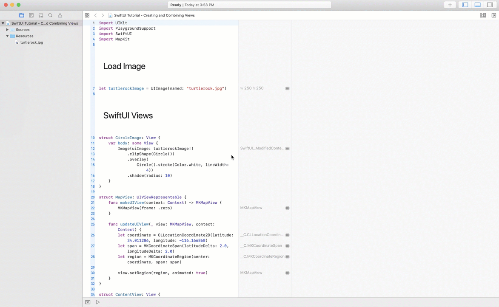
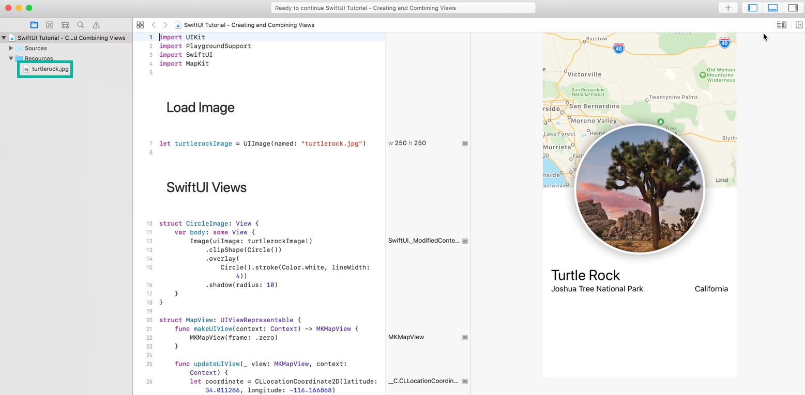
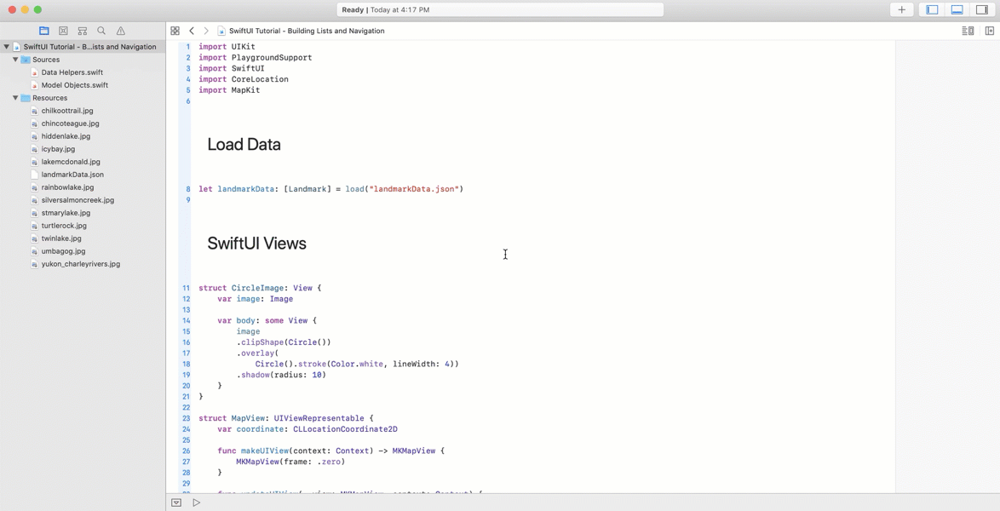
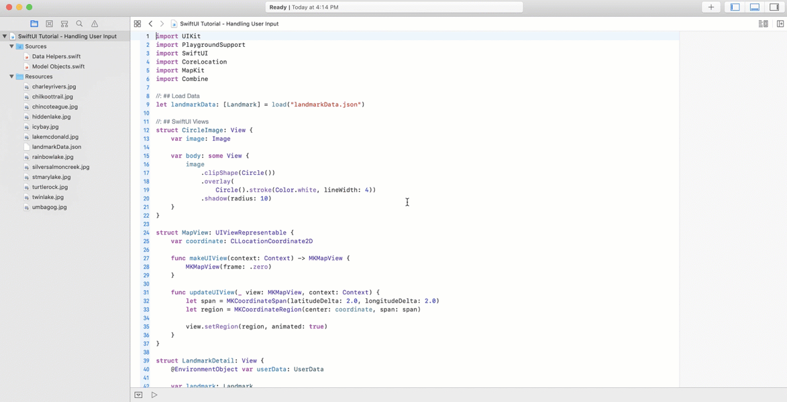

Apple's SwiftUI Essentials Tutorial Series as Playgrounds
Why Playgrounds?
I’ve been making my way through Apple’s SwiftUI tutorials.
If you’re anything like me, you learn by tinkering with things. Change the modifiers, reposition Text, use a different Image, and see what happens.
BUT.
Without macOS Catalina, iterating quickly on these tinker sessions involves starting and stopping a simulator to see the changes.
#annoying, right?
However… since you can use SwiftUI in a Playground, I decided to take my learning experience out of the sample Xcode projects that Apple provides, and turn them into Playgrounds.
I’ve pushed them to GitHub, just in case they’d be useful to you.
Repository Structure
Each tutorial in the Essentials series has its own completed Playground.
Download or clone the repository to experiment with the SwiftUI tutorials individually in a Playground environment.
Run the playground, and show the live preview to see it in action.

Creating and Combining Views
All resources required for generating the SwiftUI preview have been added under the Resources folder.

Building Lists and Navigation
All resources required for generating the SwiftUI preview have been added under the Resources folder.
Helper code for loading the JSON data file and generating images in the UI at different sizes has been placed in the Data Helpers.swift file.
Model Objects.swift contains the code for the Landmark and Coordinates types.

Handling User Input
All resources required for generating the SwiftUI preview have been added under the Resources folder.
Helper code for loading the JSON data file including the new isFavorite property, and generating images in the UI at different sizes has been placed in the Data Helpers.swift file.
Model Objects.swift contains the code for the Landmark and Coordinates types. It also adds the UserData bindable object.
